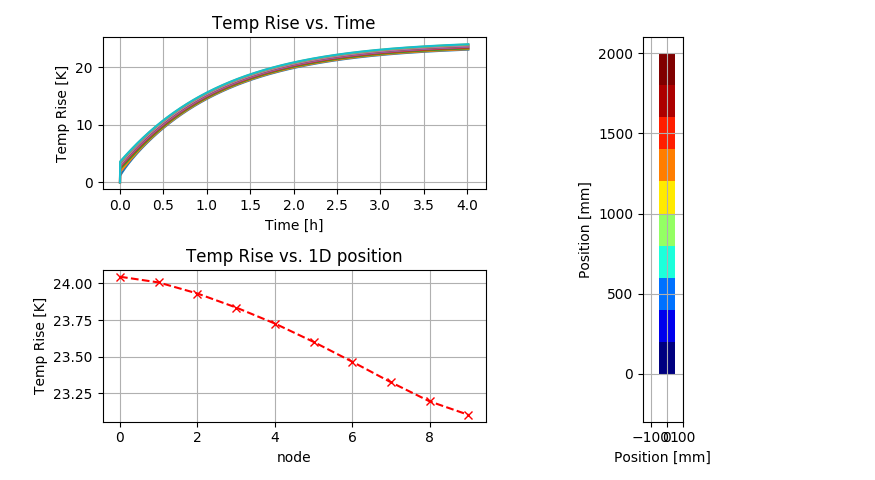

The main idea of this library arise when I was working on some case study of temperature rise calculations for current carrying copper busbars. At is basis all it does is to calculate the energy balance equation for a solid body with given heat source cooled in free air. Solution used in this tool is not intended to be as precise as CFD analysis can be. It is more focus on simplified (but not too much) engineering type analysis that is acceptable quick and can be used as a guide for design decision making.
The solution takes into account all the major aspects of the energy transport in the system:
Used system defining methodology allows to build a 0 dimensional representation of quite complex 3D systems.
To explain more in details how the solution approach is done it will be good to divide the entire process into some main steps:
System definition
Solution definition
Solving
Results
Before we discuss more in details how each step works "under the hood" let's go through basic calculation script that do some solving for a very simple single copper conductor case.
Firstly we will need to get our library functions available to use in the script. To make it possible some initial imports are done:
Import of the tnt library resources
xxxxxxxxxxfrom thermalModelLibrary import tntObjects as tntOfrom thermalModelLibrary import tntSolverObj as tntSand some other common python libraries for drawing the plots and doing some little math around data plotting
xxxxxxxxxximport matplotlib.pyplot as pltimport numpy as npHaving all required things imported we can move to pt.1.1 and define simple material
xxxxxxxxxxCu = tntO.Material()Using the material object constructor without any parameters it will return typical Copper material. Any other material can be generated, but this will be described in detailed doc.
Having this done we can move to pt.1.2 and define simple conductor node
xxxxxxxxxxconductor = tntO.thermalElement( shape = tntO.shape(20,100,200,1,90), HTC = 5, emissivity = 0.35, dP = True, source = 0, material = Cu)This create a single conductor node with a shape of box 20x100x200 [mm] with 1 such conductor in parallel and being oriented vertically to the top. This node is made of defined material of copper, have a emissivity of 0.35 and Heat Transfer Coefficient of 5 [W/m2K].
This node will be solved for ohmic losses (dP = True), and have additional internal power source equal to 0.
We can move to pt.1.3 and define the object we want to analyze. Lets assume its a 2m long conductor build from the defined basic conductor node. to do this we will first prepare Elements a list that will describe such situation.
xxxxxxxxxxElements = [ (conductor, 10) ]This notation just inform the library function that we want to have a 10 nodes of conductor type in serial one after another. To make this ready for solver some extra work need to be done. We need to run method that will do all necessary preparations for us doing:
Cloning our node object as independent ones as per defined shape:
xxxxxxxxxxElements = tntS.generateList(Elements) Doing node objects internal variables set up according to defined geometry
xxxxxxxxxxtntS.elementsForObjSolver(Elements)And finally having all geometry definitions and nodes preparations done we just need to calculate each node x,y position in space.
xxxxxxxxxxtntS.nodePosXY(Elements) This conclude the preparations up to pt.2.1
Is may seems quite a lot for such simple case. However if we extend the simulation to much more complex geometry and add additional connections between Objects like the above Elements all those steps will make more sens.
Having all above done we can set up the solver and run the simulation by saying:
xxxxxxxxxxt,T,stp, linpos, XYpos, air = tntS.Solver(Elements, 2000, 20, 20, 4*60*60, 500, 0.01)What it does is:
Running this the Solver function returns to us:
Having all this data available we can take a look on the results. The below code is a summary of simple data preparations for display using matplotlib plotting library. So it will not be analyzed in details.
xxxxxxxxxx# Rest is just cleaning up data for plottingt = np.array(t) # changing list t into np array typet = t / (60*60) # recalculating timesteps to hours# preparing temp rises as resultsb = np.array(T)b = b - 20 # subtracting the ambient to get temperature rises# defining the main plot windowfig = plt.figure('Temperature Rise Analysis ')# first subplot for the timecurvesax1 = fig.add_subplot(221)ax1.plot(t,b[:,:])ax1.set_title('Temp Rise vs. Time')plt.ylabel('Temp Rise [K]')plt.xlabel('Time [h]')# Temperature rises from last timepoint for each nodeax2 = fig.add_subplot(223)ax2.plot(b[-1,::-1],'rx--')ax2.set_title('Temp Rise vs. 1D position')plt.ylabel('Temp Rise [K]')plt.xlabel('node')ax1.grid()ax2.grid()# Defining the subplot for geometry heat mapax3 = fig.add_subplot(122, aspect='equal')# runs the defined procedure on this axis to draw the shapetntS.drawElements(ax3,Elements,np.array(b[-1,:]))plt.tight_layout()plt.show()Running that with python3 we shall get the result window:

Additionally each node element now have the following internal variables:
What is this thing?
In principle to solve the case for each node element in each time step it's necessary to:
calculate internal power generation QSRC (ohmic losses plus defined additional power source)
calculate the power dissipated to air via convection Qconv
calculate the power dissipated to air via radiation Qrad
calculate the power transferred via conduction from previous nodes QIN
calculate the power transferred via conduction to next nodes QOUT
solve the summary power balance for this time step
Q = QSRC - Qconv - Qrad + QIN - QOUT
get the energy delta in the time step:
E = Q . time
base on the element mass and material properties calculate the temperature rise T
if the result is smaller than the allowed by Solver configuration parameter we set the flag and move to next node element.
when we done with all of nodes and all nodes solutions are within allowable limits we proceed to next time step. If not we repeat this time step with reduced T
For the calculations of Qconv and Qrad an ambient temperature value is needed. The simplest solution is to use a constant value of temperature. However for many cases this approach may be to simplified. In real scenario for devices that are enclosed in any type of enclosure we have air temperature being distributed vertically from coolest at the bottom to the hottest at the top. This is effect of the buoyancy force.
To be able to in some approximation simulate this solver can apply two approaches:
The aasssm mechanism is activated if the solver parameter for TAMB is set to a numeric value.
How it works:
It's a static solution that is done before the transient solver starts. It's results is used for all further time steps.
Simulated System is analyzed to get the size in height.
20 cells Air thermal network model is prepared for this height.
each node element is mapped to proper Air cell based on its y position.
Heat sources from each element are calculated (once) and added to Air heat input vector.
Based on the predefined thermal conductances each Air cell temperature is calculated.
To simulate (approximated) effect of temperature stratification the Air cell temperatures are sorted from coolest at the bottom to the hottest at the top.